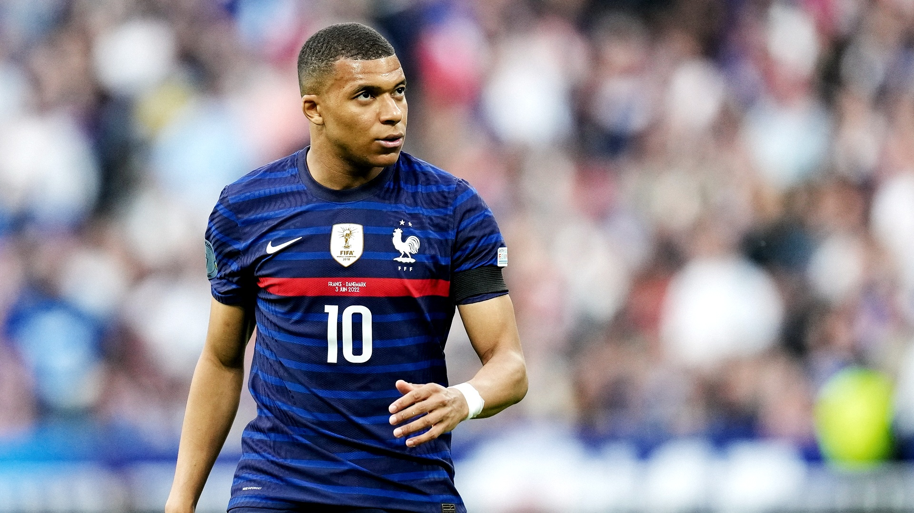
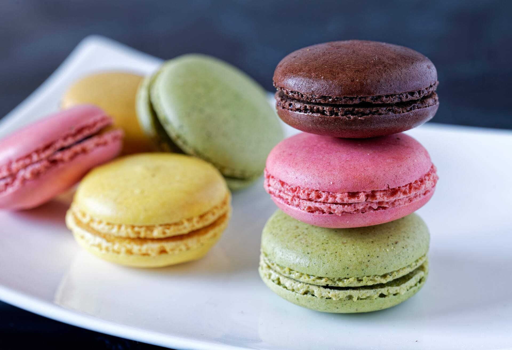
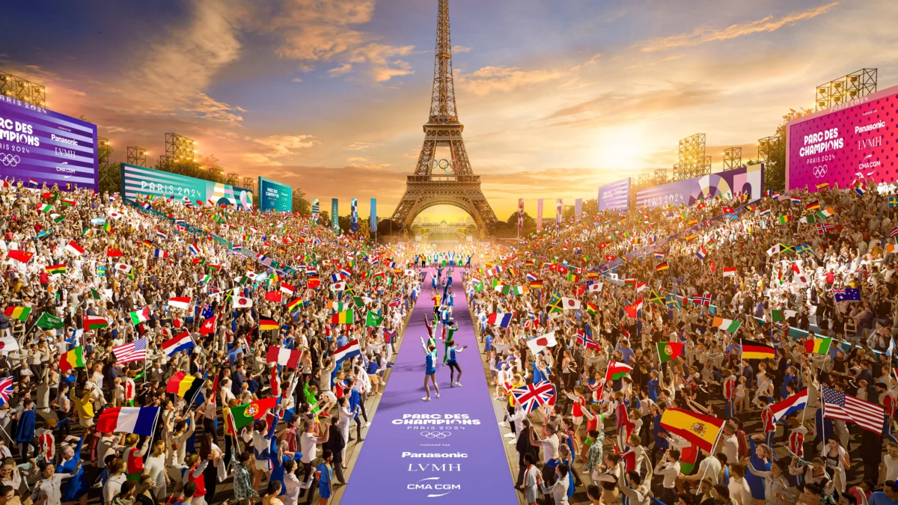

París, conocida como la "Ciudad de la Luz", es la capital de Francia y un símbolo mundial de cultura, arte y romance. Famosa por monumentos icónicos como la Torre Eiffel, el Museo del Louvre y la Catedral de Notre Dame, también destaca por sus encantadoras calles, cafés históricos y el río Sena que la atraviesa. Es un centro global de moda y gastronomía, donde la cocina francesa brilla con sus baguettes, croissants y vinos. Su rica historia y su atmósfera única la convierten en un destino imprescindible para millones de visitantes cada año.
Lugares emblemáticos
 París, la "Ciudad de la Luz", ofrece maravillas icónicas como la Torre Eiffel, el Museo del Louvre, y la Catedral de Notre Dame. En Montmartre, disfruta de sus calles bohemias y la Basílica del Sagrado Corazón. Pasea por los Campos Elíseos hasta el Arco del Triunfo o visita el majestuoso Palacio de Versalles. Explora el vibrante Barrio Latino y el Panteón, y maravíllate con los vitrales de la Sainte-Chapelle. Descubre arte en el Museo de Orsay y relájate en los Jardines de Luxemburgo. Un paseo por el río Sena completa la experiencia de esta ciudad romántica e histórica. Mas información
París, la "Ciudad de la Luz", ofrece maravillas icónicas como la Torre Eiffel, el Museo del Louvre, y la Catedral de Notre Dame. En Montmartre, disfruta de sus calles bohemias y la Basílica del Sagrado Corazón. Pasea por los Campos Elíseos hasta el Arco del Triunfo o visita el majestuoso Palacio de Versalles. Explora el vibrante Barrio Latino y el Panteón, y maravíllate con los vitrales de la Sainte-Chapelle. Descubre arte en el Museo de Orsay y relájate en los Jardines de Luxemburgo. Un paseo por el río Sena completa la experiencia de esta ciudad romántica e histórica. Mas información
Deportes mas practicados en París

En París, los deportes más populares incluyen el fútbol, con equipos icónicos como el Paris Saint-Germain (PSG); el rugby, especialmente con la selección francesa y clubes como Stade Français; y el tenis, destacando el torneo Roland Garros. También se practican mucho el ciclismo, con eventos como el Tour de Francia terminando en los Campos Elíseos, y el baloncesto, con una creciente popularidad. Otros deportes como la natación, el running, y el patinaje son comunes, especialmente en los parques y espacios públicos. París tiene una rica tradición deportiva, impulsada por su infraestructura y eventos internacionales. Mas información
Gastronomía de París

La gastronomía de París es un símbolo de la excelencia culinaria francesa. Entre los platos más icónicos están el croissant, el pain au chocolat, el bœuf bourguignon, la sopa de cebolla gratinada y el quiche lorraine, acompañados de quesos como camembert, brie y roquefort con una baguette crujiente. Los postres incluyen delicias como macarons, crème brûlée y tarta tatin, junto con el café parisino y vinos de renombre. Además, París ofrece una vibrante escena multicultural, con influencias internacionales que enriquecen su cocina, desde crepes hasta sabores asiáticos y norteafricanos. Mas información
Cultura en París

La cultura de París es rica, diversa e influyente, siendo un epicentro mundial de arte, teatro, música, cine y moda. Con museos emblemáticos como el Louvre y el Museo de Orsay, y teatros como el Palacio Garnier, la ciudad es un referente cultural global. París también es cuna de grandes escritores y cineastas, desde Victor Hugo hasta la Nouvelle Vague. La moda y el diseño son pilares fundamentales, con la ciudad siendo la capital mundial de la alta costura. Su arquitectura abarca desde el gótico de Notre Dame hasta lo contemporáneo del Centro Pompidou, mientras que los cafés y bistrós reflejan una vibrante tradición de creatividad y debate. Mas información